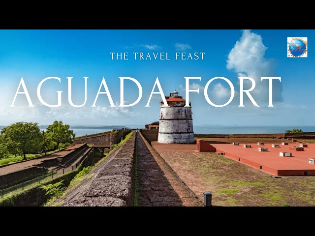
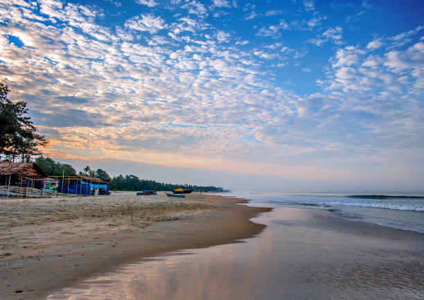

Goa Trip Itinerary
01
Vadodara to Goa
Assemble at Vadodara station by 1:00 PM. Board the train/bus towards Goa. Evening journey starts. Dinner onboard.
Meals: Dinner

02
Arrival in Goa & Beach Visit
Reach Goa by morning. Check-in at hotel and relax. Visit Calangute and Baga Beach in the afternoon. Enjoy local cuisine.
Meals: Breakfast, Lunch, Dinner

03
North Goa Sightseeing
After breakfast, visit Fort Aguada, Chapora Fort, and Anjuna Beach. Evening free for shopping at local markets.
Meals: Breakfast, Lunch, Dinner
04
South Goa Exploration
Visit Colva Beach, Palolem Beach, and relax at the serene beaches. Evening enjoy a sunset cruise.
Meals: Breakfast, Lunch, Dinner
05
Return to Vadodara
Check out after breakfast. Depart for Vadodara by afternoon/evening. Reach Vadodara by late evening. Trip ends.
Meals: Breakfast, Lunch